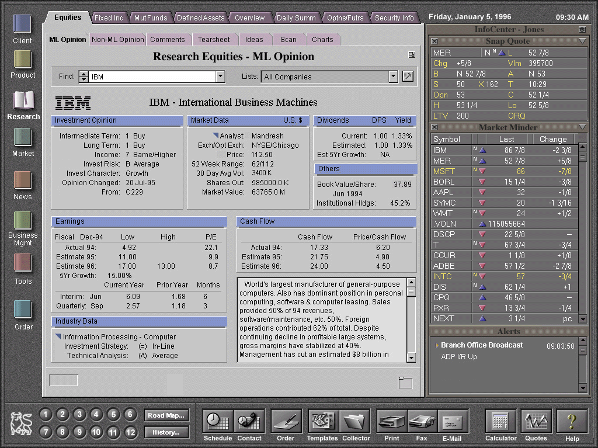

Real World Design in the Corporate Environment:
Designing an Interface for the Technically Challenged
Susan Hopper
Merrill Lynch
User Interface Design
400 College Road East
Princeton, NJ 08540
(609) 282-4793
email:Susan_Hopper@ml.com
Harold Hambrose
Electronic Ink
President
401 S. Second Street Suite 304
Philadelphia, PA
email:Harold_Hambrose@ml.com
Paul Kanevsky
Merrill Lynch
Strategic Market Systems
400 College Road East
Princeton, NJ 08540
(609) 282-5747
email:Paul_Kanevsky@ml.com
Abstract
The development of a graphical user interface for Merrill Lynch's Trusted
Global Advisor (TGA) system is a major endeavor to bring enhanced information
access and updated technology to the desktops of more than 15,000 financial
consultants and industry professionals firmwide.
The TGA development team's goals and challenges are two-fold. The business
goal is to create a comprehensive, integrated computing environment that
is unique and would identify Merrill Lynch as the technology pioneer in
the financial services industry.
The technological challenge included the design of a graphical user interface
that could be easily learned and understood by all users in the Firm-the
majority of which are PC illiterate. In order to have acceptance from the
users, this new system has to appeal to both the first-time GUI user and
mouse aficionados alike.
Keywords
user interface, corporate environment, hierarchy, tab metaphor, iterative
design, book, shell.
Introduction
The system being replaced is a 3270, character-based mainframe system. The
current network is a usability nightmare, but contains an enormous amount
of valuable information that has to be maintained and transferred to the
new system. In addition, the old system forces the user to know three-letter
function codes (more than 300 in all) for any task they wants to accomplish.
Figure 1. PRISM
Current 3270 Market Data Retrieval System
The new platform design is utilizing the Microsoft Windows NT operating
system running under a graphical user interface in a TCP/IP networking environment.
The interface has to allow users to easily accomplish tasks in a minimal
amount of time.
The challenge here is to make the technology as transparent to the user
as possible. The team's directive: the user should only be concerned with
what they need to do; how to do it on the new system should be obvious.
The team's challenges to date:
- How do you design a comprehensive system that seamlessly integrates
350 separate applications into one easy to learn and use business tool?
- How do you design an interface simple enough for even the most inexperienced
of users, NONE of whom can afford to lose even one day of business for training?
- How do you introduce user interface design and usability concepts to
a huge development community and make these processes work in an area traditionally
resistant to change?
I - The Shell: A History of the Design
When this project was originally started in 1993, there were many prototype
iterations and opinions of what the "the Shell" should look like
and how users would be expected to interact with it. Multiple shell designs
were produced, none of which seemed to work. Accurate evaluations of unsuccessful
iterations didn't take place, as qualified Human Factors Engineers and User
Interface Designers were not involved in the project. The team seemed to
be designing in a vacuum-allowing only a select (and often unqualified)
few to critique the design.
Eventually, the team was reorganized to include professionals who had already
created a very successful shell-based design in another area of the company.
This earlier product was created for a smaller-scale system, dubbed "CICERO."
The user base was familiar with Windows, and CICERO was to replace numerous
off-the-shelf products that were being used to accomplish the user's tasks.
No formal usability tests were done, however, informal testing provided
positive feedback as to the ease-of-use of the CICERO system. With the infusion
of much needed expertise and guidance, the TGA project was refocused and
put on the right track.
Figure 2. CICERO
The latest version of CICERO that was adopted for TGA. Drag and drop targets
resided at the top of the screen.
The Shell needed to accomplish several things-it needed to be extremely
powerful, in that all utilities and access to all information should be
easy to find. Nothing could be buried. The time-on-task for a user was critical.
This alone created a design challenge. How crowded could a 1024 x 768 screen
be? We didn't want to overwhelm the user, but we wanted everything within
easy reach.
The Shell design was based on the CICERO tab metaphor (shown above), whose
Windows users found extremely easy to understand. Navigation to information
was achieved through the use of up to three levels of tabs. The tabs were
located clockwise around the application window. The primary level tabs
were across the top of the space, the secondary tabs were positioned vertically
on the right side of the space, and the tertiary tabs were located underneath
the application window. Access to information was achieved by clicking on
a top level tab, then on active secondary choices and tertiary tabs if necessary.
By utilizing the tab metaphor from CICERO in the TGA shell design-segmenting
the applications in a hierarchical format with which the users were familiar,
we hoped to lessen the learning curve.
In addition to the application space, the TGA shell also needed to display
real-time data at all times, such as stock quotes and other market information.
These would be viewed in the InfoCenter, a panel located on the left-hand
side of the application space. Users also indicated that they wanted to
view company video broadcasts and TV news channels in the InfoCenter. A
common set of functions across all applications such as print, fax, e-mail,
on-line help and tutorials are also provided by the Shell via a set of buttons
in an area known as the Action Bar.
II - Design Iterations
Once the CICERO model was adopted, we needed to refine it for the new user
base. We created several versions, each iteration was based on a new requirement
from management or users.
Initially the outgoing utilities such as print and fax were located at the
top right, to keep them in view, however, we discovered through our own
use that it was awkward to drag upwards, so they were moved to the lower
right. Since our users need to be aware of many things at once, not all
of equal importance, we developed a mechanism to alert users to incoming
messages or alerts that they need to view or take action upon such as an
opinion change or an incoming e-mail message. This message center consisted
of buttons which appeared to have a light indicating the urgency of the
alert. Red was critical, yellow was not critical but that there was a message
or alert that was present, green indicated empty or no alert or message
was present. We soon discovered that these colored buttons became distracting
and were removed. This facility was replaced by a scrolling window which
the user could configure to view only the alerts they were most concerned
with.
As time passed, Shell real estate became quite valuable. The area known
as the Device Bar was expanded to include Calendars, clocks, intelligent
messengers and Go To and Return To controls.
Also our tastes had changed. We now preferred a flatter, sleeker look for
the Shell. We maintained three-dimensionality, but lowered the height of
buttons and frames-giving us a little more visual breathing room.
Behind the Screens
To achieve a truly integrated computing environment, all applications developed
internally or purchased (e.g., Microsoft Office) are subordinated and controlled
by the shell. In effect, they become pages in the TGA book, and cannot be
accessed as "stand-alone." The uncluttered layout and shell-managed
display avoids the confusion caused by the floating or overlapped applications,
while experienced Windows users are not hindered in the performance of their
daily tasks.
Several methods were used to achieve this goal. All applications reside
within the application space in the shell. The shell manages the process
of showing and hiding application screens, and does not allow any portion
of an application to become obscured. Intuitive bookmarking and navigational
methods are implemented to give the user the feel of continuity and integration
within the shell.
To reinforce this feeling of continuity, the shell provides a context management
and sharing mechanism. Using context management, the user can pick the focus
of interest once for various applications. For example, a user can select
John Smith as the client context, and then navigate to the client profile
application. With the same client in focus, the user can then switch to
the asset allocation application to see John Smith's holdings. In the background,
the shell delivers all the necessary information to each application as
soon as a new client is selected. The context sharing can be as simple as
passing an account number, or as complex as passing multiple database records
from application to application.
The bookmarking capability in the shell simplifies the interrupt-driven
day of a Financial Consultant. Using the same example, while the user is
viewing John Smith's information his telephone rings. It's Mike Doe and
he wants to buy a stock. The user clicks on the order book and places the
order. To return to the unfinished task, the user simply clicks on the Client
book and his other client and his profile are presented at exactly the point
he left them.
III - A Cry for Standards (or Putting the Cart Before the Horse)
: The Design Team is Formed
With the Shell design firmly entrenched, we set out on our adventure to
bring the Shell to the development community. True to corporate style, a
committee was formed to quell the serious demand for some sort of user interface
standards. We had no clear-cut objectives other than to go into seclusion
and miraculously come out with UI standards for the Shell and as-yet-undeveloped
applications.
The Design Team members represented the areas of technology, business, design
and human factors. Each discipline was represented by at least two individuals.
After several months of brainstorming and brain-bashing, we came out with
a set of half-baked, fairly useless standards. It didn't go beyond the UI
guidelines already available from software manufacturers and industry experts,
with a few exceptions. We created groups of controls such as the Finder,
which handled context management. Although the standards reiterated what
most GUI developers already knew, we recognized that a large portion of
our development community had never been exposed to GUI development before
(they were, until recently, COBOL mainframe programmers) and that we needed
to educate them on the various controls. Although they could have read the
guides, we wanted to create one comprehensive document that they could refer
to for anything.
This attempt failed. Standards spoke of what a control was, but offered
little assistance in how a control was to be used. All applications posed
unique design challenges and the Standards document proved to be a poor
cookbook for applications design. We were immediately sent back to try again
by senior management. Realizing that the composition of this team was insufficient,
the original team was reorganized to include new members with UI design
skills and human factors experience. Still, we ran into the concern that
we were putting the cart before the horse. But the demand grew and we complied.
After several more weeks, a Standards document was published. It included
more corporate standards to promote Merrill's look and feel such as color
usage standards, fonts, spreadsheet controls, group box controls, "more
detail" controls and language. It was a starting point that would assist
developers in fulfilling their directive to create applications that had
the same look and feel.
Even though the Design Team felt as if we were not completely comfortable
with the standards we published, the exercise was not useless. We found
that we needed to amend the Standards Guide or publish Updates on a relatively
frequent basis. This not only aggravated the developers, but potentially
pushed back their delivery dates.
When interface design began in earnest, the Standards could be amended.
Now came the hard part-getting the standards to fit into the interface design
of the applications-or vice versa depending on the developer or their manager.
IV - Into the Trenches
Upon general distribution of the first draft of the Design Standards and
Guidelines, the Design Team re-evaluated its position in the development
environment. Up to this point, the team had been a decision-making body
responsible for the creation of a list of recommendations for the design
of the TGA interface. The team had to now mobilize in order to affect change
in an environment that had already progressed in the development effort
without the benefit of interface design standards and guidelines.
In order to efficiently affect the most change within the many application
groups developing end-user interfaces, the Design Team decided that it would
be advantageous to divide and conquer. Sub-teams were formed from the members
of the design team and assigned to various application development projects.
These sub-teams consisted of four members-one member from each of the disciplines
that comprised the original committee. There was a sub-team for each of
the major development efforts, such as Client applications, Product applications,
Research, Business Management, etc.. The design team as a whole would remain
intact, but to service the development groups as smaller, more dynamic teams
seemed to work best.
The sub-teams met on an as-needed basis, more in a consultative fashion
at first. Usually the UI designers would venture out first to assist developers
with standards questions and then UI design. Eventually an informal review
of the application was scheduled with the whole sub-team. A document was
to be produced to assist the developers in making any necessary changes,
however, this seemed to infer a more formal approach and the document was
abandoned. Verbal communication seemed to be enough. The developers also
had input into the design of controls or variations in layout to accommodate
any special needs that may have.
Cross Application Reviews were developed to assure that any function that
may be common to other applications was being done consistently. These reviews
were done by the entire Design Team. This was in addition to any formal
reviews that were scheduled with the sub-teams.
The Up Side
With smaller, more accessible teams, developers were now encouraged to utilize
these individuals as a resource for the definition of their user interface-not
simply as a governing body bestowing a blessing (or not) on their UI design
efforts. Individuals with a particular skill were now seen by developers
as an aid-not a review checkpoint. Members of these smaller teams could
now communicate rapidly to the whole design committee those decisions made
while working with developers. Communication between the individual developers
and the design team (as well as among the design team itself) was improved.
Because of the physical size of these sub-teams, members were able to sit
in the developer's cubicle (their turf) to evaluate their user interfaces.
This created a hands-on work session environment rather than the presentation-and-review
scenario-the alternative with a large design committee. Developers no longer
felt as if they were "going before the board" and interaction
between them and the Design Team flourished. And since UI designers were
able to assist any team (not just the sub-team to which they belonged) the
sub-team's evaluations usually went more smoothly.
The Down Side
As a large committee, it was easy for individual members to leave certain
areas of the guidelines and standards decision-making to others. Within
smaller teams, however, it was critical for all individuals to be well versed
in all design decisions documented in the Standards and Guidelines document
and why they were made. It was important too, for sub-team members to support
the design decisions recorded in the document, even though they may have
disagreed when the decision was originally made. When members of the team
responsible for a document contradict the statements recorded in the Standards
document, this makes the team seem fragmented and unorganized. It is important
for team members to voice disagreements and concerns about the documented
guidelines and standards to the appropriate audience, but present a unified
front.
Once out in the trenches in sub-teams, it was not difficult to forget the
larger design committee to which we all belonged. It was critical to the
survival of the Standards and Guidelines document (as well as the team),
that design decisions and challenges that arose from sub-team work be communicated
to other design team members. Without ties to the original team, we risked
becoming as fragmented a development and design effort as the one that necessitated
our creation.
It also became apparent that there weren't enough UI designers and Human
Factors specialists to go around, so some applications fell through the
cracks. They were discovered during formal Design Team Reviews and Cross
Application Reviews. We are currently seeking to either streamline the process,
or acquire more resources
V - Battle of Wills: Process, Standards and Applications Design
Since all of the applications were to run under the shell, we needed the
appearance of one big, consistent application. This presented another design
challenge-introducing developers to the concept of user interface designers
and usability engineers. Our entire development team for this project is
more than 400 people. Although developers were familiar with a process,
these new extra steps caused some anxiety among the community. Standards
were welcomed; however, when it came time to follow a process, (which a
project of this magnitude truly needs), there were some differences of opinion
as to which process to follow and what to do when. As a result, no consistent
process was followed for the most part.
As in most corporate environments, time is of the essence. Since no formal
UI Design step was in place in the development lifecycle, developers forged
ahead in order to meet their deadlines. And there were many of them-Beta
1, 2, and 3, Pilot, Release. Applications were developed rapidly, with little
regard for usability. Usability Testing, however, was a formal step in the
process. Most developers would go in on their scheduled usability lab day
and promptly watch their application fail. A usability report was delivered
and most changes would be made. Then the developers would parade in to usability
and watch their application fail again. UI Design clearly needed to be a
formal step in the process and the team campaigned for this. To date, it
is now part of the processp;however, the process is still being fine-tuned.
VI - A Pain in the Neck: Usability Testing Round One- an example
Now, we had our shell and some redesigned applications. We were ready to
conduct our first formal Usability testing series. We brought in Financial
Consultants from all over the country with different backgrounds and levels
of PC experience. Our users were divided into three major groups, Administrative
Assistants, Field Champions and FCSAC (Financial Consultants Systems Advisory
Council).
Every user that was tested tilted their heads to the right to read the side
or secondary tabs. We thought it might present a problem the first or second
time through, but this problem persisted, even though the users were now
familiar with the tab structure.
We assumed the problem stemmed from the readability problems associated
with rotating text vertically, since some letters would blend into each
other and other letters would kern apart. We tried changing the font, the
size, the color, we even anti-aliased the text-still the users tilted their
heads and proclaimed they couldn't read the tabs. In addition, if the users
found the correct side tab (after tilting their head), they missed the tertiary
tabs because they were positioned at the bottom of the application area.
Another problem was that users didn't seem to understand the tab metaphor.
The tab, tab, tab metaphor seemed alien to these users, they didn't understand
the hierarchical structure. We also learned that part of the problem was
one of language-which would have to be addressed separately. What we thought
a tab should be called was foreign to the end user. So the business partners,
who act as liaison to the end users, went out to talk to the Financial Consultants
and their Administrative Assistants. Paper prototyping sessions were conducted
to determine what the tabs should be named and what tasks would reside under
them. Finally, users were influencing their product's form.
A secondary, but nagging complaint from users was the lack of color. After
using PRISM for so long, they became accustomed to looking at a bright screen
with large chunks or primary colors (blue, red, yellow and gray). TGA looked
"depressing" and "too gray" to them. We had made a conscious
effort to keep color to a minimum simply to not distract users and to use
color only if was truly meaningful not just for aesthetic reasons. An understated
and unobtrusive (not to mention not-blinding) interface was our goal. But
it seemed our effort went unappreciated. They screamed for bright yellows
and reds, greens and blues. Clearly we needed to make a compromise. So we
went back to work.
VII - Back to the Drawing Board...Again
After careful consideration of all usability issues, it was decided that
we needed to take the design apart and strengthen the metaphor.
The interface was redesigned and the metaphor of a book shelf was introduced.
The former four-level tab hierarchy was now organized and presented on the
screen as Books, Tabs, Chapters and Pages. The main benefit of this metaphor
is that it hides the complexities of managing multiple applications from
the user, while presenting a uniformly logical view of the data. For a novice
user, opening a book is a simple as a single mouse click on the cover of
the book. Flipping pages is just as simple, with a single click on the desired
tab. The hierarchical organization, its dependencies and relationships are
clear to the user through this presentation on the screen. For an advanced
user, the shell provides short-cut keys to reduce the number of keystrokes
and mouse clicks. To aid a novice user, the shell makes all of the transitions
smoother and more apparent through extensive use of animation and sound
effects.
The InfoCenter was moved to the right-hand side. Though this information
was important, users felt it to be secondary to their task at hand. This
put focus on the application area, where most of the work is performed.

Figure 3. Current TGA
Latest version of TGA. 1. Books located on the left are primary means of
navigation, highest level of hierarchy. 2. Tabs and chapters. 3. Application
space. 4. InfoCenter. 5. Pop up utilities, such as Help, Snap Quote and
Calculators. 6. Action Bar
7. Go To and Return To. 8. Predefined application buttons.
The top-level tabs were replaced by the books which were placed vertically
down the left side of the application area. They were color-coded, each
book a different color. The secondary tabs, colored to coordinate with the
active book, was moved to the top and the tertiary tabs were replaced by
a tab-like control, called chapters, which also indicated if there was a
fourth-level selection by an embossed down arrow. By placing all of these
navigational controls closer together, we reduced mouse and eye movement
greatly. The book, tab, chapter, page metaphor was something all the users
could relate to. They could touch it and understand the underlying hierarchy-thereby
reducing learning curve.
We increased the use of color in this design. Because we corresponded the
color of the books to the associated tabs, at just a glance, users could
quickly identify which book they were working in. Additionally we added
color to the application space by using colored bars for group boxes and
colored triangles for detail indicators, lessening the feeling of "grayness."
Usability Testing Round 2
We started with paper prototypes, taking them to different groups within
the Firm. We showed user the old design and compared various versions of
the new shell. This time we got a more positive reaction. They commented
that the books looked more user-friendly, they were easier on the eye-"no
more tilting your head." They liked the color coding of the books and
they felt the interface itself was more pleasant to look at. So we proceeded
with an electronic prototype. After a few weeks of tweaking the design,
it was ready for another round of testing.
Again, we got positive results. Users no longer needed to tilt their heads,
it was much easier to read, and they understood the hierarchy. Tertiary
selections were easily located, and fourth-level functionality seemed to
present no problems.
There were still a few issues to resolve, however. Readability was still
clearly an issue. Users, having been used to reading 12 point Courier in
all caps, found our 9 point Arial
Where We Are Now
At the time of this writing, we are about halfway through our development
effort. The shell and its applications are in the final revision stages,
in preparation for the first round of Beta testing, which is looming on
our calendars. Beta versions are going out in three offices (1 per month
for 3 months). Then taking this feedback with us we will pilot TGA in select
offices. Eventually a full rollout will commence in late 1996.
Conclusions
The ever-evolving design process on this project proved to be the biggest
learning experience for most members of the team. When TGA was first conceived,
this appeared to be a monumental project-one that would never see the light
of a computer monitor. Seeing it take shape and was one of the most rewarding
aspects of being on this project.
A few lessons learned ingrained in all future process: Prototypes come in
all shapes and sizes. When you're still trying out concepts, use prototypes
that don't require code. Use paper or multimedia tools to demonstrate your
concepts.
We found that the shell was the furthest along in its development cycle
(even though it had the fewest business requirements) because we continually
prototyped with either still pictures (as in Photoshop) or scripting tools
(Director). We could tweak and test until it was right, then we could build
it. It doesn't have to "work" to get your ideas across. This way
you can quickly mock up a conceptual model without worrying about coding,
debugging and data.
Putting together a multidisciplinary Design Team was also an important factor.
Once your objectives are clear, each member can contribute something valuable
from their own perspective. It provides a more multidimensional design.
Recognize the iterative nature of the UI development process. Design solutions
are seldom found at the start of any development project.
Another important lesson, especially in the corporate environment, is compromise.
Deadlines are mightier than the standard, or usability, or UI design. Accept
incremental changes. Developers want to build the best system they can and
if they accept you as part of the team, there's no better partnership.
When in a team that is responsible for making decisions that affect many
development areas, always defer to the person with the expertise (not the
highest ranking member) when no one agrees. This is the whole point of a
multidisciplanry team.
Mobilizing a larger entity such as the Design Team into the trenches can
prove to gain many allies, especially if there is initial resistance to
the design process. Working sessions are much more productive than being
viewed as a sign-off checkpoint.
Lessons learned from the development community: to never turn away a user
interface designer who wants to help. Working in a vacuum is not user-centered
design, and it can be a lot of time wasted going in the wrong direction.
User Interface designers and human factors specialists should get in the
process as early as possible. There's nothing less productive than telling
developers that "their baby is ugly" two thirds of the way into
the development effort.
Acknowledgements
The work presented in this design briefing represents the collaborative
work of many talented, committed and hard-working individuals, inspiring
visionaries and brave leaders. These people include Ritch Gaiti,Andy Williams,
Tony Pizi, Paul Kanevsky, the members of the Design Team: Alan Amira, Laura
Flannery, Phil Gilligan, Betty Greenberg, Paul Ilechko, Pat McAleavy, Janine
Purcell, Nicole Speigel, Maury Weinberg, and Christine Zafiris. Members
of the development team: Ashe Vashtare, Chris Cobb, Doug Breuninger, Rob
Sterlacci, Pam Smith, and numerous others who made this project possible.